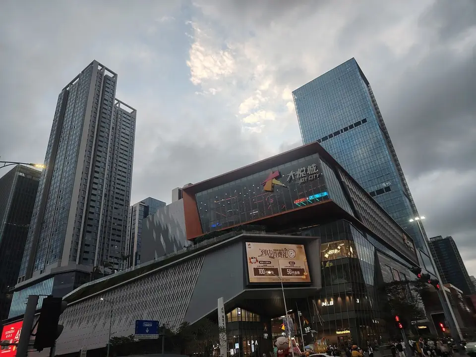
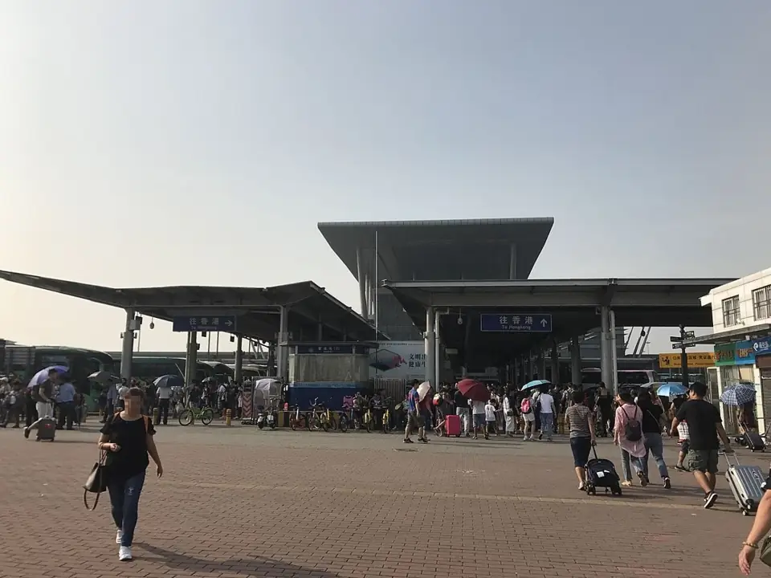
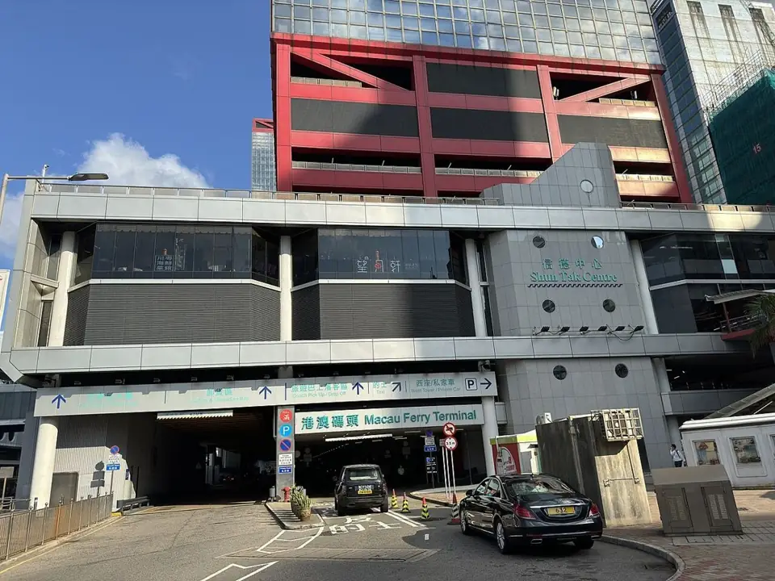

大巴与过关
环岛中港通，去程和返程都走深圳湾口岸。班次来自官网 2026-11-11 版深圳线单张。
去程 · 宝安海雅线
08:30
深圳大悦城 → 旺角朗豪坊
返程 · 宝安登喜路线
19:40
上环信德中心 → 宝安大仟里
买票
- 微信小程序“环岛中港通”（支付宝也有）。实名购票，填的证件要和过关用的是同一本。
- 去程：上车点“深圳大悦城”，08:30，下车点“旺角朗豪坊”。
- 返程：上车点“上环信德中心”，19:40，下车点“宝安大仟里”。
- 官方单张标价：九龙、港岛成人单程 $65，双程 $105。小程序里的价格以下单页为准。
票价表（官方单张，香港版）
| 目的地 | 成人单程 | 成人双程 | 3–11 岁单程 | 3 岁以下 | 65 岁以上单程 |
|---|---|---|---|---|---|
| 九龙 / 港岛 / 东涌 | $65 | $105 | $45 | $10 | $65 |
| 新界 | $55 | $85 | $35 | $10 | $55 |
| 香港国际机场 | $200 | $380 | $200 | $20 | $200 |
宝安登喜路、宝安海雅、深圳光明三条线共用这张价目表。单张是香港版，标价按港币理解。去程和返程属于同一张表，可以试试能不能按“双程”一起买，不行就各买单程。
去程：深圳大悦城 → 旺角

- 08:10 前到上车点。宝安区创业二路大悦城 10 号门，7-11 便利店门口。地铁 5 号线灵芝站出来，导航到“深圳大悦城 10 号门”，步行约 5–10 分钟。
- 08:30 发车，约 30–40 分钟到深圳湾口岸。
- 过关（步骤见下一节），周六早上连排队按 30–60 分钟估。
- 约 10:30 到旺角，在朗豪坊门前下车（港铁旺角站 E1 出口旁）。这是估计时间，可能在 10:15–11:00 之间。
宝安海雅线去香港的全部班次
| 上车点 | 早班 | 午班 | 傍晚（周六日） | 晚班 |
|---|---|---|---|---|
| 深圳创维创新谷亚朵酒店 | 07:45 | 13:45 | — | 18:45 |
| 海雅缤纷城 | 08:10 | 14:10 | 17:10 | 19:10 |
| 宝安福朋喜来登酒店 | 08:13 | 14:13 | 17:15 | — |
| 深圳大悦城 | 08:30 | 14:30 | 17:30 | 19:30 |
同一班车依次在这几个点接客。一日游只有 08:30 这班合适。
深圳湾口岸怎么过关

深圳湾是“一地两检”：内地出境和香港入境在同一栋楼里，走一段通道就到。
去香港（早上）
- 大巴停在口岸，拿上所有东西下车。
- 内地边检出境。通行证可以走自助通道。
- 沿通道往前走，香港入境处入境。
- 过关后直走，找橙色的环岛中港通柜台，出示车票，听工作人员安排上车。可能是原车，也可能换一辆。
- 上车时说清楚在旺角朗豪坊下。
回深圳（晚上）
- 大巴到口岸，拿上所有东西下车。
- 香港出境，再内地入境。
- 过关后往右，到 4–7 号车位找环岛中港通的车。
- 坐到宝安大仟里：海城路与新湖路交汇处，大仟里 L1 层 3 号门前。
历史与文化：为什么这里是“一地两检”
深圳湾口岸和 5.5 公里长的深圳湾公路大桥在 2007 年 7 月 1 日启用，那天是香港回归十周年。它是内地第一个“一地两检”口岸：香港的入境柜台不在香港，而是设在深圳蛇口这边的同一栋楼里。
为了让香港的执法人员能在深圳的土地上办公，全国人大常委会在 2006 年专门作出决定，授权香港特区管辖楼里的“港方口岸区”，在那里实施香港法律。十几年后，高铁西九龙站用的是同一个思路，只是反过来：内地口岸区设在香港。
过了口岸，大巴就从靠右行驶换成香港的靠左行驶。
返程：上环信德中心 → 宝安大仟里

- 19:20 前到上车点。上环信德中心招商局大厦地下 G05 铺位（环岛中港通柜位），港铁上环站 D 出口。这里也是港澳码头，人多，但上车点不在码头里面。
- 19:40 发车。这是当天回大仟里的最后一班。
- 到深圳湾口岸过关（见上一节），再坐到宝安大仟里。
- 约 21:30–22:00 到（估计）。周六傍晚出市区可能塞车。
宝安登喜路线回大仟里的全部班次（周六）
| 香港上车点 | 上午 | 下午 | 末班 |
|---|---|---|---|
| 上环 信德中心 | 11:40 | 16:40 | 19:40 |
| 尖沙咀 K11 MUSEA | — | — | 19:20 |
| 尖沙咀 海港城 | 11:25 | 16:25 | 19:25 |
| 旺角 朗豪坊 | 11:30 | 16:30 | 19:40 |
| 太子 砵兰街 | 11:45 | 16:45 | 19:45 |
| 湾仔 | 11:25 | 16:25 | 19:25 |
| 铜锣湾 时代广场 | 11:10 | 16:10 | 周六没有 |
早上还有一班（上环 09:20）。铜锣湾的 19:10 只在周一到周五开。落客点是宝安大仟里和登喜路国际大酒店。小程序里列出的上车点不一定都有去大仟里的车，先选下车点“宝安大仟里”再看班次。回大悦城的末班是上环 17:40，太早，所以回大仟里。
为什么选上环上车
- 正好在行程终点。坚尼地城看完黄昏，坐港铁 3 站就到，吃完饭走几分钟上车。
- 港岛上它最晚。上环 19:40 比湾仔 19:25 晚，周六铜锣湾又没有晚班。
- 就在港铁站口。万一赶不上，可以马上转港铁走兜底方案。
| 从哪里去上环 | 怎么去 | 大约用时 |
|---|---|---|
| 坚尼地城 | 港铁港岛线 3 站 | 15 分钟 |
| 中环天星码头 | 沿海旁往西走 | 15–20 分钟 |
| 尖沙咀 | 港铁到中环，转港岛线 | 15–20 分钟 |
| 旺角 | 港铁到中环，转港岛线 | 25–30 分钟 |
赶不上末班车怎么办
| 情况 | 办法 |
|---|---|
| 人在尖沙咀，来不及回上环 | 去 K11 MUSEA 19:20 或海港城 19:25 上同一条线。要在小程序里改签，或到了现场问工作人员。 |
| 错过 19:40，但 20:10 前能到上环或旺角 | 坐环岛中港通“万象前海线”周六末班：海港城 19:55、湾仔 19:55、上环 20:10、旺角 20:10、太子 20:15。到深圳前海（JEN 酒店 / 万象前海东广场 / 前海山姆）下车，再打车回宝安，约 10 公里。要另外买票。 |
| 更晚 | 自己过关：港铁东铁线到罗湖或落马洲，过关后转深圳地铁；或者从西九龙站坐高铁到福田站。 |
环岛中港通客服：香港 (852) 2979 8778，内地 (86) 4008 822 322。